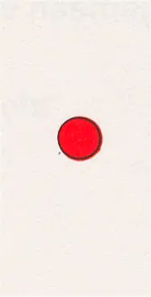
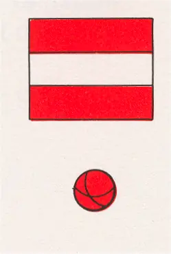
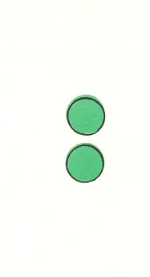
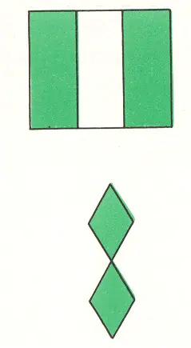
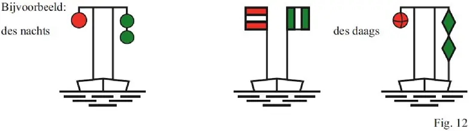
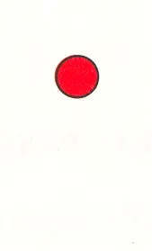
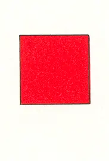
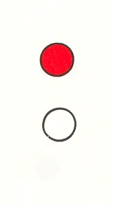
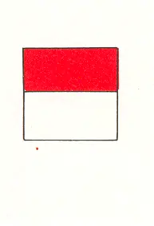
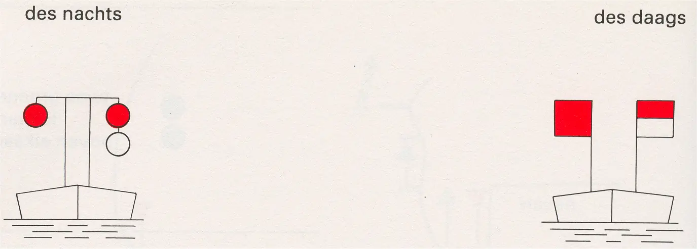

IV Andere mogelijkheden om gevaarlijke punten en obstakels in de vaarweg te markeren
Rijnvaartpolitiereglement 1995
1 Voorbijvaren aan de vrije zijde toegestaan zonder snelheidsvermindering
des nachts | des daags | ||
niet vrije zijde | niet vrije zijde | ||
 | een rood licht |  | Verbodsteken A.1 of een rode bol |
vrije zijde | vrije zijde | ||
 | twee groene lichten boven elkaar |  | Aanwijzingsteken E.1 of twee groene ruiten boven elkaar |
(fig. 11) |

2 Voorbijvaren aan de vrije zijde toegestaan met verminderde snelheid (vermijden van hinderlijke waterbeweging)
des nachts | des daags | ||
niet vrije zijde | niet vrije zijde | ||
 | een rood licht |  | een rode vlag of een rood bord |
vrije zijde | vrije zijde | ||
 | een rood licht boven een wit licht |  | een rode vlag of een rood bord boven een witte vlag of een wit bord |
(fig 13.) |
Bijvoorbeeld:
